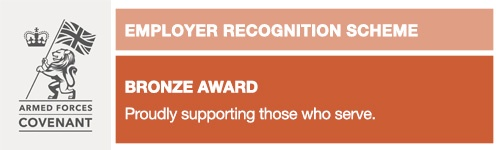
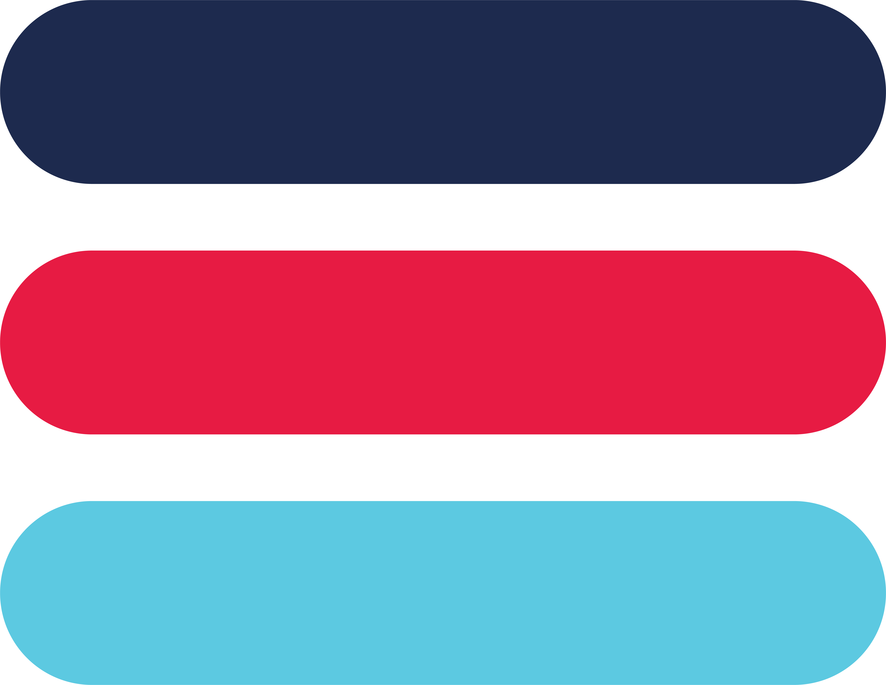

ACSIS Life Coaching offers agile coaching that is sustainable and innovative, giving clients space for self-discovery. Our 3C coaching model centres on Clarity, Courage and Connection. Sustainability is at the heart of everything we do.
ClarityCourageConnectionSustainable coaching

Browser only
Clarity Call.This is a taster and a fit check, not a full coaching session. The sections below contain the same prompts as the original run sheet. Open only the reminders you need.
Clarity Call run sheet
30 minutes · tick as you go
0 of 0
Coach reflection · Optional
Coaching Call.Choose the session type. The core handrail stays available, while the shorter checklist changes to match the type of conversation.
Session setup
Choose what best fits today
Core coaching handrail
Use flexibly, not as a script
Any session
Open, explore and close
Keep in mindSupport, do not solve. The client should do most of the thinking. Silence is allowed. A useful session does not need to cover everything.
Goal setting
Selected type
Goal setting prompts
0 of 0
Coach reflection · Optional
One record for either call.Keep notes factual and proportionate. Selected coaching exercises open inside this handbook and are included in the session PDF.
Session record
Expand only what you need
Session details
Session notes · What came up
Capture key themes, relevant facts, the client’s own words and any important shift. Avoid diagnosis, speculation and unnecessary detail.
Actions from the call
Action
Owner
By when

Optional practical tools appear in the PDF only when switched on.
Coaching model bankChoose a model to structure the coaching conversation
Practical tools bankChoose a practical tool to support action between sessions
Choose only what supports the client.
These tools are separate from the coaching models. Switch on a tool when you have introduced it, worked through it with the client, or agreed that they will use it after the session.
ACSIS Coaching ToolboxChoose an exercise to work through inside this session
Choose only what supports the client.Selected exercises open inside the handbook and are included in the session PDF. Minimise this list when you have chosen what you need.
Safeguarding comes before coaching. Stay calm, listen, do not investigate and do not promise secrecy. Where there is immediate danger call 999. In every scenario, notify ACSIS Safeguarding Lead Sam Kinsey-Briggs and complete the report below.
Safeguarding question flow
Choose the concern to see the next steps
What type of concern do you suspect?
Immediate danger
Stop the coaching process and establish the person’s location and immediate safety.
Call 999, or support the client to call. Stay connected where safe and practical.
Share only the information needed for emergency action.
Record the words used, observations, decisions, times and people contacted.
Notify Sam Kinsey-Briggs immediately, then complete and email the safeguarding report to sam@acsis.co.uk.
Suicide or self-harm
Ask directly and calmly: Are you thinking about suicide? Have you made a plan? Do you have the means? When might you act? Can you keep yourself safe right now?
If life is at risk, there is a plan with intent or means, an attempt or overdose, or they cannot stay safe, call 999 or go to A&E.
If urgent but not an emergency, call NHS 111 and select the mental health option, or support them to contact their GP or crisis team.
Do not leave an immediately unsafe person alone. In remote coaching, confirm their location and identify someone nearby who can help.
Record facts and actions, not a clinical judgement.
Notify Sam Kinsey-Briggs in all cases and complete the safeguarding report.
Concern about a child
Listen and reassure. Do not ask leading questions, investigate or confront the alleged person responsible.
Clarify only what is necessary to understand immediate safety: who, what, where and when.
If immediate danger, call 999. Otherwise contact the relevant local authority children’s safeguarding service or police as directed by the Safeguarding Lead.
Do not delay sharing because proof is unavailable. Record the child’s words as accurately as possible.
Notify Sam Kinsey-Briggs promptly, even when the concern seems uncertain or historic.
Concern about an adult at risk
Consider immediate danger, capacity, coercion and whether other people may also be at risk.
Seek the adult’s views and consent where safe and appropriate. A serious risk may justify sharing without consent.
If immediate danger, call 999. Otherwise consult the Safeguarding Lead and the relevant local authority adult safeguarding service.
Record the concern, wishes, consent decision, actions and reasons.
Notify Sam Kinsey-Briggs in every scenario.
Risk to another person
Clarify who may be at risk, the nature and immediacy of the threat, access to weapons or means, and the person’s location.
For a credible immediate threat call 999. Do not warn or confront a potential victim yourself where this could increase risk.
Share relevant information with emergency services and the Safeguarding Lead.
Record exact words, context, times and actions.
Notify Sam Kinsey-Briggs immediately.
Terrorism or radicalisation concern
Do not investigate, challenge ideology or alert anyone who may increase the risk.
If there is immediate danger or an active terrorist-related threat, call 999.
For a non-immediate concern, notify the Safeguarding Lead for consideration of a Prevent referral. The national police Prevent advice line is 0800 011 3764.
Record the specific behaviour or words that caused concern, without labels or assumptions.
Notify Sam Kinsey-Briggs in all terrorism or radicalisation scenarios.
Historic or non-immediate disclosure
Listen without investigating and check whether anyone is currently at risk.
Explain that ACSIS may need to share information to protect the client or another person.
Consult the Safeguarding Lead before deciding no further action is needed.
Record what was disclosed, current risk considerations and the decision made.
Notify Sam Kinsey-Briggs and complete the report.
Unsure, serious welfare concern or outside coaching scope
Pause coaching and clarify what support is needed now.
Check for immediate risk to self, others, a child or an adult at risk.
Signpost or refer to an appropriate clinical, statutory or specialist service.
Seek safeguarding advice rather than holding the uncertainty alone.
Notify Sam Kinsey-Briggs, including when the decision is that no referral is required.
Safeguarding report
Complete and email to sam@acsis.co.uk
After completing this report: export the Safeguarding tab as a PDF and email it securely to sam@acsis.co.uk. Keep disclosure to those who need the information to protect the person or others.
Simple auditable record. Complete this when a coaching engagement closes, pauses or transfers. Client records should be retained securely for 7 years in line with ACSIS policy.
Client and engagement details
Key business record
Session summary
Add one short line for each session
Session
Date
Short summary of what was covered
Closure and next steps
What happens now
ACSIS policy requires client records to be retained securely for 7 years. Access should be limited to those who need it for safeguarding, supervision, service delivery, legal or audit purposes.
After completion: export this tab as a PDF and email it securely to sam@acsis.co.uk and contact@acsis.co.uk.